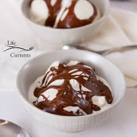

Home
Marshmallow hot fudge sauce

Description
A quick, easy, and smooth fudge sauce that's super easy to make with marshmallows, milk, and chocolate chips.
Ingredients
- 30 large marshmallows
- ⅔ cup milk
- ¼ cup butter
- ⅛ teaspoon salt
- 1 (12 ounce) package semisweet chocolate chips
- 1 ½ teaspoons vanilla extract
Directions
- Gather all ingredients.
- Heat marshmallows, milk, butter, and salt in a saucepan over low heat until marshmallows melt, stirring often, about 5 minutes.
- Add chocolate chips and vanilla extract; continue stirring until chocolate is melted, 5 minutes more. Serve warm.